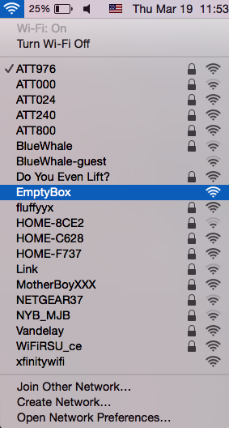

LANlockED (Hidden) Workshop
Congratulations, you've found this hidden website. Welcome to My Internet.
Well, it isn't really My Internet, but it is my own Captive Portal Access Point (huh?!) Let me back up...
Now that you have connected to my Local Area Network (LAN) you are being served this webpage from a small linux computer somewhere nearby.

While you are connected to this LAN any URL you visit or link you follow will automatically redirect to whatever content is in the www/ folder on that Raspberry Pi ↑, which in this case is the page you are viewing now. Throughout this tutorial/workshop I will be teaching you how to set up your own Captive Portal LAN, show you some example projects you could make with one, and discuss why creating a Battery Operated Mobile Captive Portal Wireless Access Point (BOMCPWAP) is an endevor rich for artistic exploration.
What You Could Make And Why You Should Make It
Because BOMCPWAPs are mobile, rapidly deployable, and fairly expendable, they present a unique and powerful oppertunity for you to deliver your own web content to a group of people guaranteed to be nearby. They are great for:
- Connecting people in areas where an Internet or 3G connection is not available.
- Augmenting an exhibition or gallery experience.
- Hosting an offline Web Art exhibition in a real place (or a collection of them around a city).
With a BOMCPWAP you could easily create:
- A networked game connecting riders of a public transportation service.
- A Skype-like application that automatically connects viewers who are already in the same place.
- A LAN style BBS featuring ASCII art packs.
Example
In the United States, home wireless routers receiving cable from Comcast XFINITY (one of the largest providers in the nation) are automatically configured to produce two access points. The first is a normal wireless access point that can be encrypted, named, etc... However, the second is automatically created (often without the consumer's knowledge) with the name xfinitywifi specifically so that other XFINITY customers can piggy-back off of the wireless router if they loggin with their Comcast account credentials.
Because Comcast XFINITY is so ubiquitous in the US, and because most mobile devices and computer wifi settings are set to "automatically join known networks" by default, by simply naming your BOMCPWAP's SSID xfinitywifi you can bait people in to joining your LAN automatically.
Here I have configured my BOMCPWAP to automatically display the default XFINITY login page for 5 seconds when someone connects to my network:
That login page then redirects to a local copy of http://spam.com with 6 videos of Rick Astley's 1987 pop hit "Never Gonna Give You Up" spinning in a loop and concurrently playing at their own offsets.
Follow the instructions below to setup your own BOMCPWAP in no time!
Getting Started
You'll need the following things to get up and running with your own BOMCPWAP:
- Raspberry Pi (any model, including RPi 2)
- USB Wireless Network Card that supports packet injection. (I recommend the $15 TL-WN722N but most should work)
- USB Battery Pack capable of supplying 1 AMP of current to your Raspberry Pi (not required, but non-BOM CPWAPs are for squares)
- SD Card (or Micro SD card dependent on your Raspberry Pi model)
- Raspbian OS Distrobution (Downloadable from the Raspberry Pi website)
- A copy of the EmptyBox source code
If you've never used a Raspberry Pi before or you are unconforatble with installing the Raspbian Operating System, there are plenty of tutorials for that on the web. If you want to install this now, log off this LAN and go find the real internet, then come back once you have installed Raspbian (or another Debian based linux distrobution) on your Raspberry Pi.
EmptyBox
EmptyBox is the software package that allows you to set up your own BOMCPWAP in ~15 Minutes flat. It is my fork of the PirateBox project with modifications that relinquish it from its original purpose. EmptyBox is meant to:
- Promote experimentation using Wifi Access Points (APs) for the purpose of media art, performance, and/or play.
- Be rapidly deployable and well documented for artists or experimenters who wish to create artworks and experiences using Captive Portal Access Points who might otherwise find this feat challenging or be altogether unfamiliar with these technologies or concepts.
For more information about EmptyBox project visit: https://github.com/brannondorsey/emptybox
Install EmptyBox
To install emptybox on you Raspberry Pi you must first download the source code. To do this your Raspberry Pi must be connected to the internet. The easiest way to get an internet connection on the Raspberry Pi is to use an ethernet cable. Once you have an internet connection, clone the EmptyBox repository from the Terminal with the following command:
git clone https://github.com/brannondorsey/EmptyBox
Next you must install EmptyBox's dependencies and copy the emptybox/ directory by running the install script:
cd EmptyBox
sudo ./install.sh
The install command will ask you if you would like to install the dependencies and addon dependencies. Type y (for yes) whenever prompted.
If EmptyBox was installed correctly you should see something like this when the process terminates:
##############################
#EmptyBox has been installed#
##############################
Use: sudo service emptybox <start|stop>
or for systemd systems Use: sudo systemctl <start|stop|restart> emptybox
To make EmptyBox start at boot run: update-rc.d emptybox defaults
EmptyBox uses a daemon to start/stop its processes. Its dependencies do to and often times their default daemons will get in the way of EmptyBox's. Run the following commands to disable the default daemons for lighttpd, dnsmasq, and hostapd:
sudo /etc/init.d/lighttpd stop
sudo update-rc.d lighttpd remove
sudo /etc/init.d/dnsmasq stop
sudo update-rc.d dnsmasq remove
sudo /etc/init.d/hostapd stop
sudo update-rc.d hostapd remove
If you would like to have EmptyBox start on boot (highly recommended, that way you never have to plug in a monitor again) run this command:
sudo update-rc.d emptybox defaults
Now whenever you power on your Raspberry Pi it should automatically broadcast its Access Point.
To start EmptyBox, run:
sudo service start emptybox
If EmptyBox was launched successfully you should see something like this:
The EmptyBox network should now be presenting itself to nearby devices.

Any device that connects to this network and makes a non-https request should be rerouted to receive the content inside of the Raspberry Pi's /opt/emptybox/www folder.
Configuring EmptyBox
Once EmptyBox has been installed, you can easily manage the content and configuration to suit your needs. The configuration files are located in /opt/emptybox/conf/ and the content being served is located in /opt/emptybox/www/.
Using Your Own www Content